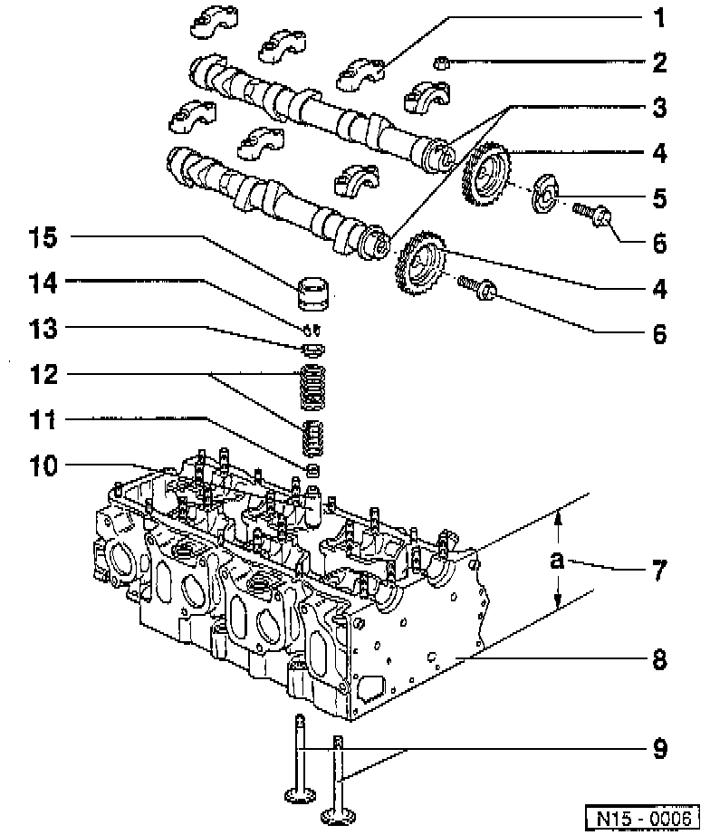
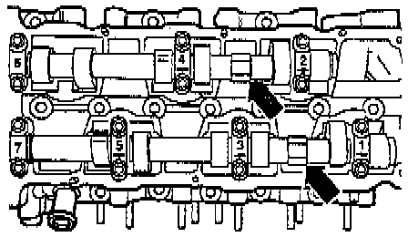
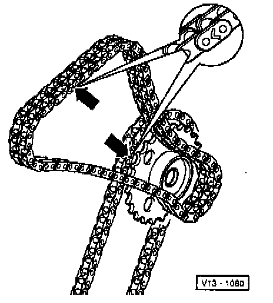
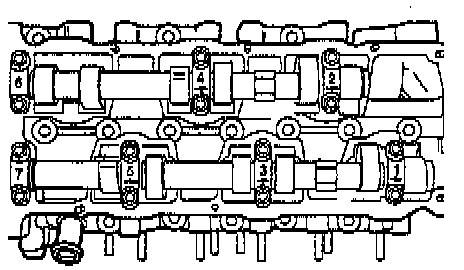

Removal

LEGEND
1 Bearing Cap
2 Bearing Cap Nut
3 Camshafts
4 Camshaft Sprocket
5 Trigger Wheel
6 Camshaft Sprocket Bolt
7 Cylinder Head Deck Height Measurement Point
8 Cylinder Head
9 Valves
10 Valve Guide
11 Valve Stem Seal
12 Valve Springs
13 Valve Spring Plate
14 Valve Keepers
15 Hydraulic Lifter
NOTE:
- During removal and installation procedures, refer to the component location illustration above and component notes below.
- Also refer to Cylinder Head Assembly.
COMPONENT NOTES
Bearing Cap (1)
- Note installed position.
- Note installation and tightening sequence.
Bearing Cap Nut (2)
- Tighten to: 20 Nm (15 ft. lbs.).
Camshafts (3)
- Check axial clearence with lifters removed.
- Axial clearence: 0.15 mm (0.0060 inch)
- Radial clearence: 0.1 mm (0.0039 inch)
- Maximum runout: 0.01 mm (0.0004 inch)
Trigger Wheel (5)
- For Camshaft Position (CMP) Sensor.
- When installing, contact surfaces must be dry.
Camshaft Sprocket Bolt (6)
- Tighten to: 100 Nm (74 ft. lbs.).
- Counter hold with a suitable 22 mm wrench on camshafts when removing or installing.
- Oil contact surface when installing.
Cylinder Head Deck Height (7)
- Dimension a, minimum: 139.5 mm (5.4963 inch).
Valves (9)
- Do not rework, only lapping is permitted.
Valve Guide (10)
- Replacement guides have a collar.
Hydraulic Lifter (15)
- Do not interchange used lifters.
- Store with camshaft contact surfaces down.
- Oil contact surfaces.
- Remove prior to checking camshaft axial clearence
REMOVAL
1. Set engine to the Top Dead Center (TDC) for Cyl 1. marks by turning in engine running direction on the vibration damper securing bolt.
2. Remove cylinder head (valve) cover.
3. Remove ignition coil.
4. Remove tensioner for double chain.
5. Remove camshaft sprocket cover complete with Camshaft Position (CMP) sensor.

6. Loosen camshaft sprocket mounting bolts.
NOTE:
- Counter-hold camshaft using 24 mm open wrench -arrow-.
- The camshaft jig tool No. 3268, or equivalent, must not be in place when tightening or loosening the chain sprockets.
7. Remove camshaft sprockets.

8. Mark double chain before removing (e.g. with paint, arrow pointing in engine running direction).
NOTE: Do not mark the chain with a center punch or any similar means that could scratch or deface the metal surface!

9. Remove camshafts as follows:
a. Camshaft for cylinders 1, 3 and 5:
- First remove bearing caps 1 and 7.
- Loosen bearing caps 3 and 5 alternately and diagonally.
b. Camshaft for cylinders 2, 4 and 6.
- First remove bearing cap 4.
- Loosen bearing caps 2 and 6 alternately and diagonally